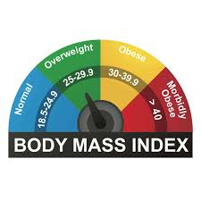

BMI Calculator

The Body Mass Index (BMI) Calculator is a tool designed to determine an individual's BMI value, which is a measure of body fat based on height and weight. This calculator provides not only the BMI value but also considers age to determine the corresponding weight status. By factoring in age, it offers a more accurate assessment, as BMI norms can vary depending on age groups. This feature ensures that the evaluation accounts for the natural changes in body composition that occur with age, providing a comprehensive understanding of an individual's weight status relative to their age bracket.
To-Do List

To-do list React application that utilizes MongoDB Atlas to store tasks and performs CRUD (Create, Read, Update, Delete) operations through it. In simpler terms, the app allows users to create tasks, view existing tasks, update them, and delete them. MongoDB Atlas serves as the database where these tasks are stored, providing a scalable and flexible solution for managing the data. The project's code and a README file containing further details are available on the author's GitHub account, allowing others to explore the code, understand its functionality.
Cryptocurrency Prediction
The Cryptocurrency Prediction project is a venture focused on leveraging historical data and advanced machine learning techniques to anticipate the future prices of various cryptocurrencies. By analyzing past trends, market behavior, and other relevant factors, the project seeks to develop models that can make accurate predictions regarding the value of cryptocurrencies over time. This endeavor involves employing sophisticated algorithms and statistical methodologies to uncover patterns and relationships within the data, ultimately enabling investors and stakeholders to make more informed decisions about buying, selling, or holding cryptocurrency assets.